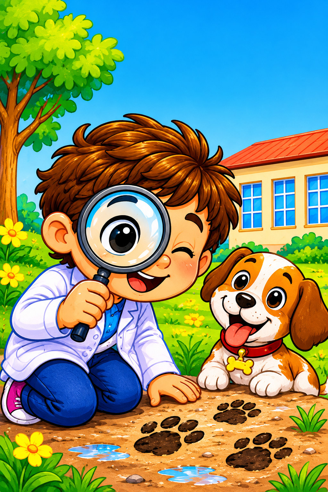
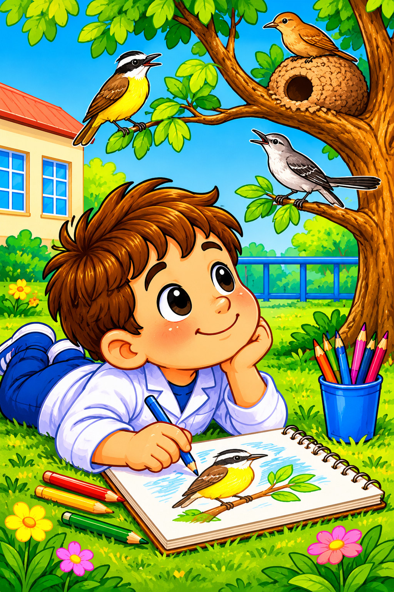
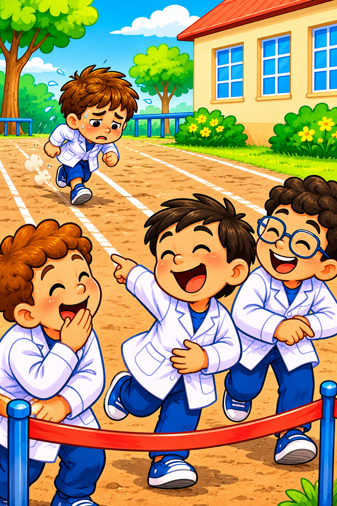
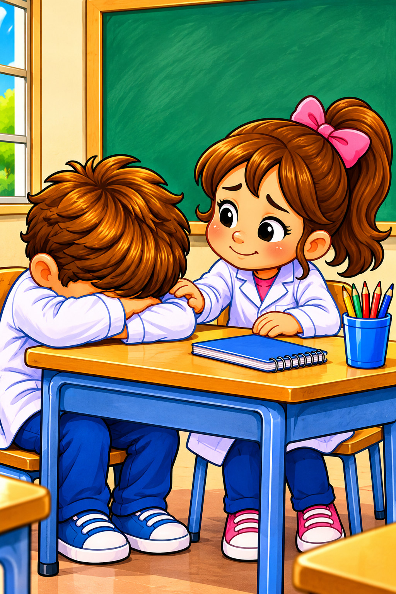
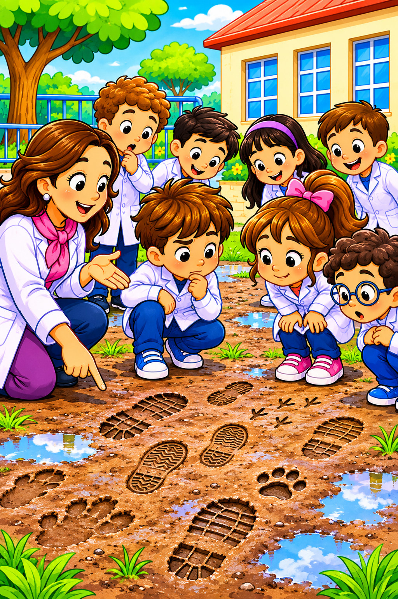
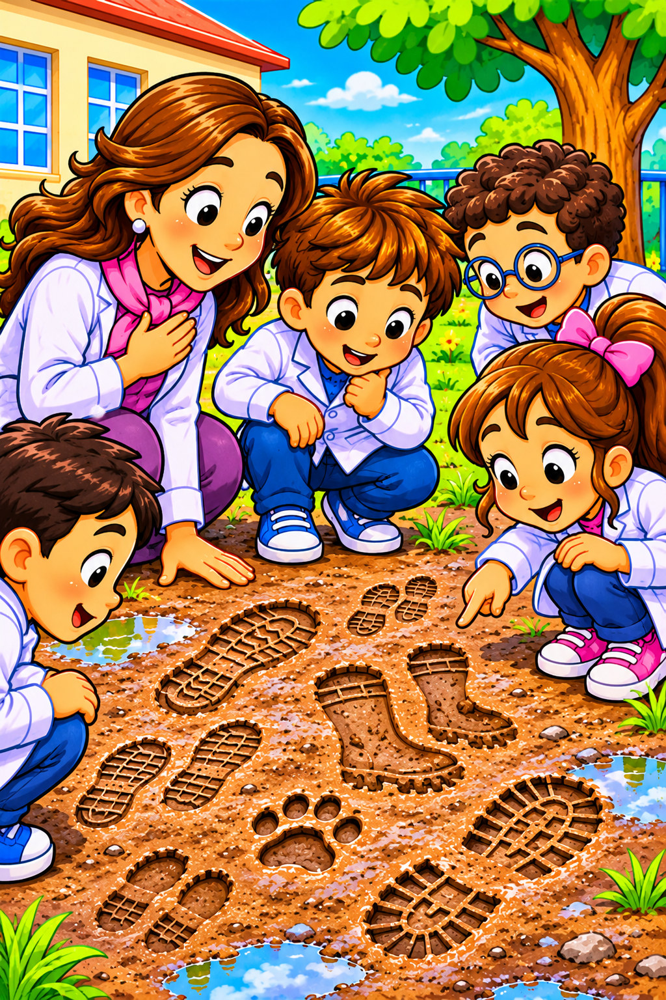
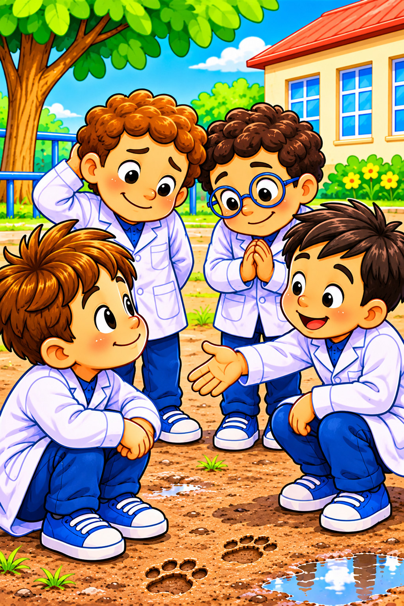
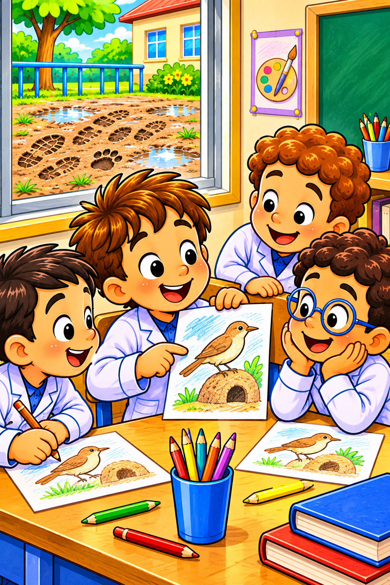

Un cuento sobre el respeto, la amistad y el valor de cada persona

Tomás era el más chiquito de 2.º A. Le encantaba dibujar pájaros y se sabía el nombre de todos los que venían al patio. Pero corría despacito.

Un día, en el recreo, hicieron una carrera. Tomás llegó último, muy atrás de todos. Algunos chicos se rieron y le gritaron: “¡Tortuga! ¡Tortuga!”.

Tomás no dijo nada. Se fue al aula, se sentó en su banco y escondió la cara entre los brazos.
Sofilo vio. Se acercó despacito y se sentó al lado. “A mí también me dijeron cosas una vez”, le dijo. “Y me dolió mucho.”

La noche anterior había llovido. La seño Rosa llevó a todo el grado al patio. El barro estaba lleno de huellas: grandes, chiquitas, de zapatillas, de botas, ¡y hasta una de perro!
“¿Cuál es la mejor huella?”, preguntó la seño.

Los chicos miraron y miraron. “Ninguna”, dijo uno. “Son todas distintas.”
“Así es”, dijo la seño. “Cada huella es de alguien distinto, y cada persona es importante. Nadie es mejor porque corre más rápido.”

Los chicos que se habían reído se quedaron callados. Después se acercaron a Tomás. “Perdón por decirte tortuga”, le dijeron. Tomás sonrió.

Esa tarde, en Plástica, tenían que dibujar un pájaro. A los chicos de la carrera no les salía. Entonces Tomás, el más chiquito de 2.º A, les enseñó a dibujar un hornero.
Y en el barro del patio quedaron todas las huellas juntas, una al lado de la otra.
